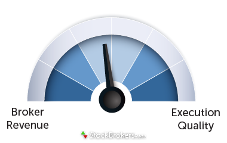

Table of Contents
Money
“A penny saved is a penny earned.” -Benjamin Franklin
“The whole investing industry exists only by making commissions on trades and charging you fees for assets under management. Hence they encourage active trading/management funds and rarely let you see how you perform relative to an index fund (usually worse)” –Marion Boersma (grandpa)
Your fees are based on the amount of assets managed, which aligns our incentives with yours – when you do well, we do well. – Fisher Investments Uhh…what about when I do poorly? You still do well!
“You hear stories of secretaries at Microsoft being millionaires, their groundskeepers driving a Ferrari…I didn't want to be an innovator, I just wanted to make a quick, easy buck. I just wanted in” – Boiler Room
The time you spend investing in your occupation/career is probably your best most likely source of income  Don't spend a lot of time becoming an expert on “maybes” / predicting what companies will do well, especially if it is close to random noise anyways!
Don't spend a lot of time becoming an expert on “maybes” / predicting what companies will do well, especially if it is close to random noise anyways!
- Plus the world improves more measurably as compared to “yeah I made a bunch of money! (off of other investors, which is a zero-sum game)”. Arguably though, investors help to some extent by somewhat efficiently allocating capital to profitable ventures
- I need some more justification of this, but it feels right
Do something where you’re performing a real service for people. It’ll be a success. I like investment counseling. And I like helping others. It gives you pleasure you can’t get spending thousands of dollars. Sir John Templeton, May 1951
Annual Enrollment
Standard stuff of HDHP and basic vision and dental.
How much life or disability insurance should I have? Does Intel cover that amount by default?
- If no, is getting it inside Intel cheaper than outside?
- If I leave Intel, then need to make sure to increase an external policy or study what it is at the next company.
Hyatt Legal. Do I need a:
- Will?
- Living trust?
Full handbook: psb-handbook-complete.pdf
Life Insurance Claim
Call Intel Employee Services at 1-800-238-0486. Need a claim form and proof of death.
Domes Todos
Class
3 fund portfolio strategy Recommends a Revocable trust. Hyatt legal is $200/year compared to the $3K for the real cost.
- Forces you to create a living will and power of attorney.
Domes
- Get a will and beneficiaries on all accounts.
- Signing up for MetLife legal, probably talk with Zook Law first.
- Life insurance, if I left Intel, could I take it with me. You can only buy it when you don't need it. If you need it, then you can't get it anymore!
- Recommend a 20-year-term policy that is renewable.
- It's for when you get cancer and have bills racked up and then die. This can occur even if you're single!
- When you have kids, then he recommends a 1.0 mil or a 1.5 mil.
- Accident insurance. $25 / year.
- Probably want a $5-7K car. Lots are good price and good car and good condition. Well worth the investment.
- Want a backup method for people to log into without needing my phone (in case it gets lost). Hmmm…Yubikey? Or a different phone?
- List descriptions of the accounts and why you opened them.
- DONE! Download Social Security statement, see what they say are your earnings and whether you have 40 quarters.
- Send statement to Domes.
- Social security pays for you in disability situations, also pays spouse and dependents.
- Double check RSU and ESPP tax basis. Same for brokerages.
- Keep track of running and total contributions/basis to all accounts. HSA, Roth IRA, rollover, 401k,
- Send Domes reimbursement for last year and maybe this year.
- Can gift $15K each year to each mom and dad. Love and benevolence. No rental agreement.
Tax rates over time.
IRS Pubs are not considered a reliable source.
- Revproc, a notice, the law itself, those are the quotable things.
- Bureau of National Affairs publish condensed booklets on various tax topics. They reference revprocs, etc.
Want to make sure that the gross proceeds from the various 1099 documents is the correct amount or higher. Don't dare underreport proceeds on schedule d.
Breaking the Market
Fascinating series of posts.
Investing Games
https://breakingthemarket.com/math-games/
By rolling ahead your bet, the odds start going against you! By making your bet size static or a static portion of your pot, you can keep the odds in your favor.
Assumes that buy and hold in one stock is a coin flip every day, which obviously it isn't. However maybe it's similar?!
| Real Life | Coin Flip Game | Outcome |
|---|---|---|
| Buy and Hold | Reinvest winnings each time | Losing game |
| Index Fund | Reinvest 1/N winnings across N stocks, is it rebalancing? | Maybe winning? |
| Traditional Portfolio | Rebalance winners and buy losers | Winning, barely |
| Trend Following | ||
| Best strategy | Fixed bet size, arithmetic! | But then your money would never grow… |
Fidelity Pages
For whatever reason they're all different and have misunderstandings of the term “automatic investment”.
| Loc | URL |
|---|---|
| Auto-Invest (for all accounts, has links to individual pages) | https://digital.fidelity.com/ftgw/digital/auto-invest |
| EFT Transfer Request | https://digital.fidelity.com/ftgw/digital/universal-tracker/ |
Remaining Questions / Misunderstandings
Mostly points for Jeff Eischen.
- About how much to budget for family?
- I probably have goals, but they're subconscious and definitely changeable. I don't know what I will want to do!
- Bonds aren't always a good investment. More often they're not!
- ERN had a good article on this.
- Also, what about using leading indicators like ERN?
- Inverse stock market during known bear?
- Why, if this indicators work, don't mutual funds take advantage of them?
- FRORX yields are low right now, because of rising interest rates? (it's a fixed 5% return, right?)
- Why are 20Y bonds worse than 1-3Y bonds (worse for interest rate risk)? Won't they all change value more or less the same as new bond issues come out?
- Sequence of Return risk
- If you're “informed” / have a predictable model of the market ala ERN, does having a static glide path even matter? Just re-evaluate!
- Also, why is Year 0-15 more important than Year 15+? Try with simple example.
- 0% stock (“100% chance of meeting your goal”) vs 100% stock (80% chance of exceeding your goal, 50% chance of not). Jeffrey Eischen vs. ERN (has a nice article on saving for a mortgage down payment that I remember)
- Unimportant: Are the above on a CFP exam, particularly sequence of return risk?
- I hope I'm able to bring something to our conversation together! (I'm not overly boring / uninteresting to him)
- Read some of the recent bullets
- Why bad to sell shares for cash flow? Why tilt your portfolio towards dividends?
Jeffrey Eischen
Meeting 3
My "Goals"
Permanent goals:
- Optimize the marginal pleasure and money curve. Mr. Money Mustache's example of 2 parents and 1 child for <$25K (not including mortgage/rent) seems reasonable. I'm basically there already with a <$15K yearly spend. Have to work on the happy part though :)
- With the leftover money, invest it wisely into my own financial independence and good causes.
- Not so much optimize for happiness, but optimize for sustainable … impact? Man… what is The Good.
Medium-term (5 year) goals:
- Become settled in who the God of the Universe is and what Good is.
- With that foundation set, call up Julia or someone similar and probably get married. Maybe invest in a house, maybe not. Probably dedicate 20 years of my life to raising children.
- Get a better idea of what to do with my life once in a position of financial independence.
- Not “shrivel up and die”
- Not be stuck in an apartment/house alone.
- It might be even best to stay working at technology companies for a time. Some technology can have impact.
Questions:
- I like the idea of asset allocation for better returns due to independent volatility. However, if there's no volatility, it can be better to just go with cap-weighted…
- I still emotionally like market timing the coming recession and upturn, despite some nice videos and articles to the contrary. When to “get back in” is a toughie…I would like convincing out of my emotions if justified…
- What is Jeffrey's budget for his family? What does he optimize for?
- What are my blind spots?
Response
You need seasoning. You need to grind through something for a while. Working at Intel and bringing in $100K per year while single is too easy. Why?
- Why should I add stress to my life? Because it allows you to know when things do get bad, you can grind through it again and make it through / outlast people.
- Gave example of client that ground through 2009 by working two jobs, one a normal shop daytime job and another doing packages for UPS from midnight to 8am.
32:00 You need to have goals because you can only get so far by optimizing and subtracting unneeded costs. So what are you going to do with all of this money that you've saved?
- But I do have goals, kind of!
- I hesitate to put a goal out there because it might turn out to be foolish/unreachable in the end. For example, why do MLSP things? No good reason, other than high school self liked it.
- Perhaps…but you didn't know that ahead of time
39:30 Jeffrey likes FI and being frugal and investing wisely, but if you don't have a plan you'll be twitching in a coffee shop somewhere for lack of human contact!
- He enjoys being a financial advisor because he can change people's lives on a daily basis. He can help people out of really difficult situations and genuinely help them. Not getting paid the money.
Why not an active management approach? You're only picking an index fund because there are no fees?
- No, I believe am happy to pay for consistent out-performance after fees. I am trying to find out how to do that reliably. Even FRORX underperforms the benchmark they stated for themselves! (before taxes, I think)
Think income, not growth.
- But growth to a retiree can be the same as income, just withdraw periodically!
52:30-ish, “Get rid of optimize, optimize your happiness, leveraged, sustainable, marginal pleasure and money curve ”
- How can I create the most happiness for someone else? One way of doing happiness
- Having money doesn't help. So many of Jeff's friends and acquaintances who make millions per year have committed suicide. Why? Because they didn't find happiness in what they did.
- Striving to find happiness is a cautionary tale. Find value instead in what you produce. ???!!
- How do I create what I need to to get the life I want to live? Nolan, you're trying to math equation a life out, and it doesn't work that way. What does he mean? I'm guessing not financial
Leveraging up and “buying” a home is not what I want to do…
- They go down just like the stock market!
Why is a small selling out of a position for means of income bad? Why are dividends so much better than stock buybacks / capital gains?
The dollars you invest today need to be more conservative than the later ones because you're going to get scared and sell out.
- Maybe true 18 months ago, but not so much anymore. But still trying to time the market…
- Also going into stocks, for most people, cuts them off years to FI.
0% Promotional APR on Credit Card
While a 0% loan for a year sounds great, it's a little different with credit cards.
- Minimum payment ($25) requires
logging inevery month. Automatic withdrawal from checking! - If when the APR resets you don't pay the full amount, you get the full APR applied for the whole period??
- M1 finance charges ~4% APR to borrow. Quite cheap.
- Balance transfer to new card is 3% fee usually. Boo
- Credit utilization goes up
- Not necessarily a bad thing for credit score. Neutral below 10% or something like that.
- Would worry about forgetting the reset date, even with calendar.
- Make multiple calendar (email) reminders to start saving, etc.
- What is the benefit? Conservatively 8% if money is invested. On $1000 it's $80/year, on $10K it's $800/year. Not bad. Is it worth the worrying/setup?
The Quest of the Simple Life
Great old book based in London / UK about different perspectives on money and time.
- Investor looking for the next leveraged hit. But is never satisfied with his piles of money.
- Another person…I forgot.
- The author wants to live in the country and work with his hands and mind and be a “good kind of tired” at the end of the day.
- Has a great debate with a friend of his about working with the poor in London. His friend appeals to the fact that the author is selfish. I forget the rebuttal kinda, but it's quite good.
Coin Flip Betting
As seen in Financial Risk Management for Dummies, by Aaron Brown of AQR Capital management.
{kind=link}
{kind=link}
{kind=link}
{kind=link}
Hello Aaron,
I am enjoying your book so far! I have plenty more to read…
However, after thinking about the example in Chapter 1 [1] (link to Google Books), I think your derivation of the expected return is incorrect. Let's run the idealized scenario of N = 250, 125 heads and 125 tails. We would expect the expected value to reflect this idealized scenario accurately, correct?
With the 20% / -18% return scenario, the expected value would be: 1.20^(125)*(1-0.18)^(125) = 0.984^125 = $.133. As expected from the trials.
With another scenario, a static dollar $.20 / $-.18 return, where the pot doesn't change: $.20*125 - $.18*125 + 1 = $3.50
But this isn't the same as the expected value ….? 1.01^250 = $12.03!
I'm confused now…
Kevin O'Leary
Really believes in a pre-nup big time and not getting married to avoid getting divorced.
The most important thing
Good book also by Howard Marks, although a little too high level for me.
Their goal isn't to outrun the winners, just matching the index is fine. However, they want to avoid all the downside recession risk that comes with the index. Sounds good to me.
Determining whether an investor is skilled (alpha) is not so easily determined after the fact! There were many other possible outcomes that could have but didn't happen. Did they just leverage up and take on more volatility/risk (beta)?
Also, investors that are bullish will look good in bullish markets, and look really bad in down markets. Same for vice versa. Just because someone calls the top doesn't mean they didn't have many false alarms before then.
Risk
Great explanation of risk by Howard Marks in “The Most Important Thing”. Probably a good writeup here: 2014-09-03-risk-revisited.pdf
- In the pursuit of being able to analyze something, academics have given into volatility as the only needed measure of risk. There are many more that seem more important. Things aren't a gaussian…
{kind=link}
Intel
Intel will not reimburse you for any frequent travel program points used
- You're not an official retiree unless you meet certain requirements.
- Other than accelerating RSU stuff and providing some health plan benefits, it doesn't seem to be worth working 20+ years for Intel for!
Leverage
Keith Tax Guy: NO! https://wealthyaccountant.com/2017/10/25/when-maximizing-gains-are-a-stupid-idea/
- Your account is always collecting interest, regardless of market motion.
- Lots of landlords go bankrupt!
- It feels good to be debt-free

I always thought it was about how much I was worth. No more. I think you are a helluva lot richer without debt than with a massive net worth. I feel better about myself financially now than ever before. I always knew I owed somebody. Now that is gone and I can yell:
“I’M DEBT FREE!!!”
- Also future stock returns can be uncertain whereas debt is not. You can spend a lot of unconscious energy worrying about debt.
- Also his wife loved it a lot too. More than being a 8-figure person.
Stocks
Upside
- Margin interest is still individually deductible. However, probably can't meet standard deduction. If you have lots of deduction but not a lot of income, you can convert your qualified dividends to be ordinary income to get a 0% tax rate. Interesting.
Downside
Implementation
- HELOC will let you do it.
Real Estate
{kind=link}
Upsides?
- Don't have margin calls on the money
Multiply your returns!
- Enthusiastically expounded in this “book”. 7_money_myths_free_download.pdf. Was recommended from an amazon reviewer for another book, but is quite … not the whole picture.
Downsides
- Looks great, but you have opening and closing costs on the home.
Besides, financial portfolios can pay you a positive monthly cash flow. Houses cost money to keep. …
Finally, risk. Not only does leverage wildly exaggerate risk in any falling market, but the danger of putting all your net worth in one bucket these days is extreme. Real estate’s a sitting duck for more government taxation as it becomes a symbol of wealth (look at BC). Housing also turns illiquid when the market sours. Financial assets, in contrast, can be sold in seconds. The last thing you want going into retirement is a paid-off home that can’t be turned into cash flow to live on. So a one-asset plan’s a total crap shoot on what conditions may be when that holding must be punted.
New stuff to read
- How investors should deal with the overwhelming problem of understnaindg the world economy. Contrarian edge
- 23 books that changed my life - Morgan Housel Collaborative Fund
- Financial Intelligence: A manager's guide to ….
- Investing the Templeton Way
- Maybe not though
- Minervini Youtube (Super Trader Tactics Webinar)
- Getting Started in Options
- Jim Cramer's Real Money
How "helpers" make money
Great article by patio11, kalzemeus software. https://www.kalzumeus.com/2019/6/26/how-brokerages-make-money/
- Most money is made by net interest margin. Cash with minimal interest rate given, but taking in Fed overnight rate.
- Payment for order flow is actually price improvement. Lending out shares, similar thing.
- Link to great podcast interview with kitces.
Momentum
http://www.philosophicaleconomics.com/2016/01/movingaverage/, http://www.philosophicaleconomics.com/2016/01/gtt/, and https://earlyretirementnow.com/2018/04/25/market-timing-and-risk-management-part-2-momentum/.
Aaaand… https://www.philosophicaleconomics.com/2016/02/uetrend/
UK Investing Video
Really nice video. How to win the loser's game. YouTube Link! https://www.youtube.com/watch?v=SwkjqGd8NC4
- Can go with a smart beta tilt
- I don't know, brought up a lot of good questions but didn't necessarily answer them. Just summarize.
New Cars in US Composition
Ford F-Series is best selling by far. Yikes. Source: http://www.wsj.com/mdc/public/page/2_3022-autosales.html
{kind=link}
{kind=link}
Also: https://www.marklines.com/en/statistics/flash_sales/salesfig_usa_2018
Debt Composition
{kind=link}
Household
{kind=link}
China
Against
Smart accountant guy is noticing all the buildings falling over from poor construction, that has to mean something! YouTube Link! https://www.youtube.com/watch?v=f5SE47Xjx2Q
Pro
But Ray Dalio seems to think otherwise.
Smart Beta
Smart beta (investing contrarian to a standard index based on different fundamental values) hasn't outperformed in the last 10 years only. The big growth and maybe popular companies just kept getting bigger. Interesting.
- Includes Dividend investing, value investing, etc.
Contrarian contrarian (pro smart beta) view: https://www.greaterfool.ca/2019/04/13/divys/
- Pro dividend growth stocks, “dividend aristocrats”. The executives would be stupid to over-increase their dividend and risk getting off the list, offend picky ppl. But…hasn't outperformed this decade either. But maybe generally it does? Portfolio Visualizer
- But Buffett doesn't believe in dividends

Historical Stock Price Data
https://www.kaggle.com/ehallmar/daily-historical-stock-prices-1970-2018
- Want to look up patterns of INTC.
Investment Bloggers
Greater Fool
Garth Turner. He confuses me.
Sounds gloom and doom one day, but the next he's saying things are great? Have to keep his worldview in context.
- “Put your money in the market” https://www.greaterfool.ca/2018/12/21/almost-human-3/
- “Don't put it in housing!” https://www.greaterfool.ca/2018/12/20/coming-clean-2/
- Sep. 2019: Probably rates won't drop further, maybe stock market will go higher too! https://www.greaterfool.ca/2019/09/05/the-blip-2/
Interest Rates
Nominal
Real
<chart here…>
Financial Advisor
Advisor's Alpha is close to 3%, says Vanguard. https://adviceonlyfinancial.com/advisors-alpha-belongs-to-investor. Don't pay 1% for it! Get an advice-only advisor and pay yourself to do it.
Wealthfront
Very clear their investment strategy. Didn't read it yet though. Probably
- Taxes
- Fees
- And…probably not much else.
https://research.wealthfront.com/whitepapers/investment-methodology/
Edward Jones
2pm Friday in Gresham.
Ronald G Ward, AAMS. 503-465-9390.
320 NW Burnside Rd Gresham, OR 97030
Some simple questions I'm curious about.
- Risk-adjusted, how did your selection of investments for my uncle perform against their benchmarks?
- If under, by how much?
- Still trying to get this answer. They have lower barrier to entry fund models https://www.edwardjones.com/investments-services/wealth-management/advisory-solutions/fund-models.html and higher barrier to entry (UMA): https://www.edwardjones.com/investments-services/wealth-management/advisory-solutions/uma-models.html
- How did 100% risk perform from before 2008 to onward? Back-test performance data should all be there and safe to share because it should be outperforming and doesn't reveal their strategies. Assume no tax consequences for selling or the funds, because that would trash their performance (one fund had over 200% turnover >.<)
Quarterly market outlooks are “free”! Cool…
Ron:
- Home office more controls the percentages of allocations, etc. https://www.edwardjones.com/investments-services/research-guidance/investment-policy-committee.html
- Other group researches mutual funds and stocks, etc. More boring, etc.
- Series 7 license needed
- Generally Edward Jones excels at retirement planning and isn't well suited for young bucks who just want to go 100% risk.
- And…it's hard to make a benchmark for that! They don't claim to outperform the S&P 500 unfortunately. Not really sure what they claim.
- And I'm not comfortable with handing them $400/mo for something that I can do for myself that's roughly the same. And … I think anyone else can do it too. Their funds don't really outperform index funds, at least not enough to pay Edward Jones .6% to find them!
Uncle Jim's
| Fund | Notes |
|---|---|
| American Fundamental INV f3 | |
| American New World F3(FNWFX) | Matches/beats index, recently has lower fee F3 fund |
| Bridge Builder Core Bond (BBTBX | Matches / beats index |
| Bridge Builder Core Plus Bond | |
| Bridge Builder Intl Equity | |
| Bridge Builder Large Growth | |
| Bridge Builder Large Value | |
| Bridge Builder Small / Mid Growth | |
| Bridge Builder Small / Mid Value | |
| Columbia Small Cap Value II 3 | |
| Dodge & Cox Income | Closely matches Vanguard's BIV. For some reason the benchmark is way down… |
| Dodge & Cox Intl Stock | |
| EV Atlanta Capital SMID-Cap 1 | |
| Hartford World Bond Fund | |
| Invesco Intl Growth R6 | VWILX (but high min investment) sorta beats it |
| GPM US Govt' Money Market Capital | |
| Mainstay Mackay High Yield Corp 1 (MHCAX) | Met or outperformed benchmark |
| MFS MA Investors Trust R6 | |
| Pimco Commodities Plus | |
| TRP Equity Income | |
| Virtus D&P Securities (REIT), assuming low fee one, PHRIX | Vanguard VNQ is comparable in performance. |
End result:
- Morningstar “Growth of 10K” is accurate (includes all sales and ongoing fees)
- While the expense ratios are expensive (1%+), they are able to still match the index generally, and sometimes beat it.
- However, they all have high (>30%) turnover, which means higher taxes because of realized short term capital gains, which are taxed (in a taxable account) at your earned income rate. Not an issue for Roth IRA, but good to know.
- Tons of funds for some simple ideas. Is it 1.35% management fee plus money per transaction?!
Known expenses storage
| Location | Time Frame |
|---|---|
| Savings Account | Closely matches Fed's overnight rate - 0.3% Since it's short-term, isn't affected negatively by Fed increases FDIC insured, so insurance on bank runs |
| 1-month Treasury ETF (SHV, BIL) | More closely matches Fed rate, but has expense ratio of .15% A lot easier than selling treasuries by hand back into the market |
| Bonds | Since they're long-term, the yield goes down as Fed …. not sure |
| Stocks | No clue what they'll do in short term. However, over 10 experiments |
Fascinating difference of opinion between ERN (concludes stocks) and Actuary on FIRE (concludes cash). Both can be expressed in the below table, which isn't very visual…

- If you absolutely can't lose the money (can't absorb the potential loss from stock market that occurs 31% of the time with other savings), then you need to go cash. (Actuary on FIRE use case)
- If you can (ERN perspective) and if you spread out the expenses over 10 trials of 3 years each, 97.5% of the time you'll come out ahead. Your average gain will be about 3.3% a year over cash. Which is lower than I expected (isn't it 7% real average total returns for stock market?, but doesn't include cash returns which isn't zero generally). That's an edge that you can play all the time!
ERN SWR Simulator code
Another question! I claimed to write a program a while back for you that allowed people to get some knobs in working with the historical returns / Safe Withdrawal Rate data. While for short periods of investment time it's quite illuminating (and I should finish it just for that), one reason I lost some motivation to do it is because for long-term investing you have some evidence showing one can have hope of timing the business cycle market downturns/upturns!
Don't the market indicators severely lessen the relevance of the hands-off approaches to the SWR calculations (in a good way)? There are interesting bits to be sure, but in practice we can do better than that and making a full-blown calculator I still am digesting the still-helpful learnings from your simulations, but surely you aren't recommending shouldn't it be more like a 4 or 5% rule again?
Also, I'm curious on your opinion on using options to amplify the returns from knowing that market downturns/upturns are coming instead of just adjusting your asset allocation.
Stock screener
I kinda want to rank companies myself by different indicators, not just one column. Price to book value, current analyst sentiment, pe ratio, etc. As I learn more I can add more.
- I can see that the day traders add even more stuff, yikes! Just fundamentals.
Potentials are Thinkscript (https://www.stockbrokers.com/review/tdameritrade) and EasyLanguage (https://www.stockbrokers.com/review/tradestation).
Brian Feroldi
NOTE: ERN doesn't believe in everything he's saying. Interesting…https://earlyretirementnow.com/2018/06/13/good-and-bad-reasons-to-invest-in-individual-stocks/ https://www.choosefi.com/075-unfair-advantage-brian-feroldi/ ChooseFI podcast interview
For investors who have the time and inclination to research stocks, he'd recommend it. It can pay off!
If thousands of mutual fund managers and professional stock pickers with way more information, access, money, computers etc can't beat the index, what possible chance does an individual retail investor have? Yet, they are at a huge disadvantage?! Nice hook dude
MM (Money Managers) have different goals
- They are most served by increasing their NAV and not decreasing it. So, they tend to buy IBMs and larger companies. Small companies make hardly a dent in their returns, and they affect the stock price too much.
- For some reason, their investors will pull out of the fund that week/month/quarter if they under-perform the s&p 500 with any significance. Hands are tied, kinda.
- Ppl add money when it's going up, and withdraw money when it's going down.
No reimbursement fees. Also they're paid to get more NAV, not for returns.
Retail investors can go for the long term.
Advocates fundamental analysis of a stock over time, with a good amount of up front work to find the best potential companies. Do not look at the stock values over time as an investment decision, rather look at the fundamentals and add appropriately over time.
His personal returns over last 5 years were 155% vs. s&p 500 of 125%. Doesn't look that big (31% cagr vs. 25% cagr), but it adds up over time.
Keep in mind that 2/3 of Russell 3000 are losers, and 7% make up the winners / gains. So to match the market, 1/2 will be losers, 4/10 will do ok, and 1/10 will be a home run.
Wall Street tends to think for the next quarter. Volcanoes in Iceland affects Iceland air travel company short-term but shouldn't crater their stock. Same for subscribers flat for Netflix because of splitting their service, but neither really affected the long term business plan. Great buying opportunities.
Really likes stay-cations, especially with kids. Go to a hotel nearby with a heated pool. Experience something different, very cheaply!
Also feels connecting with local community (sports coach…some other examples) brings a ton of benefits. You'd think just doing the things you're really passionate about will be great, but it's insular. There's a lot more to the world to see!
Anton Kreil
Summary of his stuff https://tradinglab.tech/en/trader/anton-kreil-hedging-strategies-based-on-fundamental-analysis.html
Video I didn't watch yet. 10 secrets, blah blah https://www.youtube.com/watch?v=4a51wQAOGR4
Yedu and Arun
Index funds do beat out 80% of managers, however it's an oversimplification of the market. You can pick stocks still by taking on more “risk” and researching companies and picking what you think to be good ones.
Went over cash flow quadrant and the mindsets of different investors, also a quadrant.
Debt Cycle Dalio
Reading through his latest book, which is a gripping account of the 2008 recession as well as the 1930s recession. I think he'll talk about the upcoming one too.
2008 recession
Partly caused by housing crisis, but a lot caused by the bets on those that were made easy by options? $500 trillion or something. Hmm…might need to re-read.
- Debt crisis in 1998?
- September 2007 NYT: Stocks tumble as investors move to bonds from stocks from an increase in unemployment numbers
- Can I see these flows?
- Interestingly, the stock market went back up to 2% of the high, even after this. Wonder if some people reinvested.
- Even though he is financially conservative (no debt) and doesn't like bailing out people that are leveraged in debt over their eyeballs, in the middle of a depression is no time for that. It's what happened in the 1930s in the U.S. and the 1980s for Japan. Interesting…
deleveraging problems has never worked when these problems were big. When austerity has been tried, even in persistent attempts to get out of debt, it has eventually been abandoned by all governments because it didn’t work, and it was too painful. That is because the decreased borrowing and spending (and consequences of these on employment and many other pain points) make this type of deleveraging as self-reinforcing on the downside as the increased debts and spending that cause bubbles is on the upside.
- Same with bailing out GM and lots of companies like them. I guess there was resistance for people to vote for that unless it was able to get rid of the executive bonuses.
What sectors usually profit most from end of recession
Would make an interesting statistical study. Use the backtesting website and … do some statistics! A good saturday project, along with re-deriving the “savings to years to retirement” thingy.
- Can get data from the backtesting website. https://www.portfoliovisualizer.com/backtest-portfolio
Profiting in a <known> bear market
Easy option is to buy bonds. But…you can bet that the market will go down, which is more profitable.
- Probably want to buy “individual” treasury bonds? As 10-year treasuries coming out in 2009 aren't as profitable as 2006. A 10-year treasury mutual fund will continue to buy 10 year treasuries, even when it doesn't make sense anymore.
There are mutual funds that just short the market. And make money when the S&P 500 goes down! Not sure who takes the other side of those trades, but … yeah. Weird.
http://etfdb.com/etfdb-category/inverse-equities/
Also, this guy:
Please don’t try to time the market.
But if you must, buy year long puts (leaps) on SPY or other heavily traded index fund ETFs. Go deep in the money, and the payout starts to look enough like short selling for most people’s needs.
I usually find options superior to inverse ETFs, and it gets you around the restrictions against short selling and/or margin.
- Maybe ask the guy directly for what he meant as to why? He seems to have an informed answer.
Also the bogleheads wiki on churn in that stuff eating your returns. https://www.bogleheads.org/wiki/Inverse_and_leveraged_ETFs
If I want to do it, will need to read more. Maybe “How to make money selling stocks short”?
Millionaire Next Door
Mr. Martin tells the cold-calling brokers to send him their trading history and results and a copy of their income tax returns for the past few years. If they outperform Mr. Martin, then he'll take them. None of them end up doing it, probably because none of them can do it, much less will they send him their income
Books I'd like to read
- Freedom in an Unfree World
- Stocks for the long run
- Some from J.D. Roth's list: https://www.getrichslowly.org/money-books-index/#more-236052
- Vagabonding by Potts?
- Mostly, will I be able to get a job again if I take some time off?
- Winning the loser's game
Palm Beach Research
Darin likes them. However, I'm not so sure.
Wall Street Journal
I can access it through Multnomah County library! However, need to do the right link…https://multcolib.org/resource/wall-street-journalÍ
Compounding Interest
How a 2% fee on 7% returns (say 1/3) eats away 2/3 of your returns over 50 years. It just happens…not sure entirely yet.. here's a plot though!
{kind=link}
- Note the last plot is trying to understand the Frontline video where at the end he says “2% on 10000 over 50 years” is the same as the difference between 5% and 7%, which it isn't, I don't think. Depends on the underlying base interest rate.
Being Wealthy
Also, basically Early Retirement is the new marxism. Except the middle class become the wealthy! https://www.actuaryonfire.com/essential-insights-karl-marx-personal-finance
Stock picks
Tesla was hot, but is down recently compared to even the s&p 500. During the recession, probably good to go with the Google/Amazon/Apple etc crowd, even though you don't really like them.
Flash Boys / HFT's
Citadel and others publish their overheads for each stock and day ordered: Can get to from FIF: https://fif.com/. https://s3.amazonaws.com/citadel-wordpress-prd102/wp-content/uploads/sites/2/2016/09/29212955/CDRG201805.txt
- SEC page for decoding them: https://www.sec.gov/interps/legal/slbim12rappxa.htm
- It's like, ok. A penny on a $50 share of INTC?
But what's this about price improvements?
, from https://www.fidelity.com/bin-public/060_www_fidelity_com/documents/FIF-FBS-retail-execution-quality-stats.pdf
{kind=link}
https://www.stockbrokers.com/guides/order-execution: 
{kind=link}
Review of Interactive Brokers:
https://www.stockbrokers.com/review/interactivebrokers
{kind=link}
Interesting and fun to read book. Apparently accurate but not …. totally.
The best possible outcome from the publication of Flash Boys would not be a series of insider-trading prosecutions. Rather, it would be a decision made at the highest levels of banks like Goldman Sachs and Credit Suisse: If our clients want us to route their orders through IEX, then we’ll route their orders through IEX. That would involve the banks giving up precious revenue of their own, from their dark pools and the other methods by which they extract rents from high-frequency traders. But it would give Katsuyama the opportunity to prove his case, once and for all, that his technology really does give big investors much better execution.
If all went according to plan, the result would be less money for high-frequency traders, and more money for mutual funds, pension funds, insurance companies, hedge fund billionaires, and other big investors. Small investors would, realistically, see no difference at all. But most importantly, the market as a whole would be less skittish, less brittle, more robust. IEX, if it works, might just be the technology which could prevent a catastrophic global Flash Crash II.
- Agrees that the scalp of the mutual fund guy with the dark pool was wrong, but says it's a lot better than what it was before??!!
Also: https://news.ycombinator.com/item?id=7580363, which is a news commentary on a pretty good amazon review. https://www.amazon.com/review/R3PJO6KJGRMWUE/ref%3Dcm_cr_pr_viewpnt#R3PJO6KJGRMWUE
- Provides some more explanation of market makers and liquidity.
Financial Transactions Checklist
- Is there money available, not just present, in the account to transfer? (ATM cash deposits take >1 day to validate and transfer)
- Daily limit of NW Priority over ATM is … $500? You can change it though.
- Is there >$250 left over in bank account?
- Slush money for emergencies that can't wait until next pay day or for credit card. Like…what?
- “Yo can I borrow some money?” money
Boiler Room (movie)
Great introduction to what actually is going on in the stock market, probably.
I like how the father hates him running a blackjack operation in his apartment (acting as dealer making .4% house edge), but doesn't see through the ruse of him being a stockbroker, which is also a middleman commission thing with a higher return!
“These loaded folks in the midwest like hearing from a smooth talking New Yorker acting as a stockbroker for them”
Options Trading
Fritz
https://www.theretirementmanifesto.com/option-trading-strategy/
Covered call strategy. Relies on you understanding a good price for the stock, like it says below.
Intel guy had similar opinions.
Wealthy Accountant
The naked puts are fun (and profitable). If the stock doesn’t decline to my buying point I keep the premium and if it does I get to own a piece of a business I wanted to own.
- I think the above is an appropriate summary of his article: https://wealthyaccountant.com/2017/11/20/buying-stock-at-a-discount/. Need to re-read.
- But also see his later article:
Sometimes—not often, but sometimes—I used options to either buy a stock by selling puts. Less often I used covered calls to generate additional income. These strategies are a double edged sword. A naked put might bring in additional revenue, but if the stock climbs higher your resources would have been better utilized owning the stock rather than getting cute in an attempt to pull an extra thousand or so in option premiums. Covered calls had the opposite problem. Sometimes a stock runs too far, too fast. But trying to figure out a top is nothing short of insanity. Covered calls can work, but you risk the stock climbing over the strike price.
Dad liked OptionsAlpha for explanations.
- He seemed to this that “delta” is an accurate computation of probability that the option will pay out? Isn't 70% likelihood beating the house?
- This seems to be based on the black scholes model. https://en.wikipedia.org/wiki/Black%E2%80%93Scholes_model.
Why do orders not get filled even though the price is better?
Can you always reverse a contract, in either direction (buy or sell)? If so, why is a naked option bad?
- You need to have the margin in order to make a naked option. If you have downside protection, then you don't need as much margin!
What is SPX?
How does paper trading work? Why would my fake order not get filled?
Is there a free lunch in options? If
Is it a good way to do leveraged investing?
Why is selling options better than buying options? Seems like you can simplify it all to betting whether the stock will go up or down…
- Price
- Penalty for cancellation
Hedge Funds 'n stuff
Basically are really smart folks rewarded for short term bets. Long term risk is held usually by american taxpayers who bail out said companies.
In a bigger picture, this leads to the Gervais Principle, where smart but lazy people work to use the system to their personal advantage but not the company's. And somehow they get promoted…
https://news.ycombinator.com/item?id=6846267
- Links to a nice article “The Office according to The Office” https://www.ribbonfarm.com/the-gervais-principle/
Economic Indicators
Great website to get historical data. https://tradingeconomics.com/united-states/households-debt-to-gdp, and FRED.
Food Prices
- Go not on the weekend to get “PRICE REDUCED” meat that's going stale.
- Generally though, $2/pound for fruit, frozen or unfrozen.
- Even peanuts are ~$2/pound, and I much prefer meat! Pork is ~$2/pound!
Fidelity 401k
Detailed Transactions

So, apparently you can invest your money into other funds, it's called BrokerageLink.
Nice end-user overview of fees from Bogleheads: https://www.bogleheads.org/forum/viewtopic.php?t=100431, a different guy: https://thefinancebuff.com/best-investment-options-with-fidelity-brokeragelink.html
Intel
Won't let me do after-tax <additional> 401k contributions, even though it's possible with the tool. https://www.reddit.com/r/personalfinance/comments/54aj4g/what_are_fidelity_401k_aftertax_contributions/
{kind=link}
Relative performance of assets
{kind=link}
Early Retirement Extreme (book)
Also a great source of inspiration. Some quotable quotes:
Can opener example. Say you <already> have a manual can opener, it takes 30 seconds to open a can. Why would you work for 30 minutes so you can buy an electric one that takes the same amount of time to open the can?
Early Retirement Now
Interesting articles it would be good to read…
Options, he actually recommends them?! https://earlyretirementnow.com/2016/10/05/passive-income-through-option-writing-part-2/
https://earlyretirementnow.com/2017/11/15/that-house-over-there-is-an-investment/
Bonds
Can search individual bonds with Fidelity fixed income! (Vanguard has a lot less bonds for some reason)
Municipal
{kind=link}
Individual
Typical of Oregon bonds sold, although some are lower coupon.
{kind=link}
- The initial sale price is interesting. Anyone that buys the bond later doesn't really know the initial price, they just see the coupon. But it's still “overpaying” for a bond that really just returns 1%.
Mutual
You buy based on the distributions/returns, which the fund doesn't have to distribute. (Berkshire Hathaway doesn't return a dividend“, even though they definitely get dividends from the stocks they hold!) Eischen recommends Franklin Oregon Tax Free.
- Can't I just buy the munis myself? Seems not.
- Also, 1.25% better returns due to less taxes. Is it better performing than other bond funds, like VBTLX?
- Morningstar says they're about the same.
Cost Basis
Default is average cost basis, but optimally you want to sell your highest cost shares to lower your capital gains tax amount. Surprised Vanguard doesn't do it this way by default, but maybe there's not a big benefit to it…
- Nah, I think there's a pretty big benefit…Go with SpecID.
- Also bogleheads says to not automatically reinvest dividends to make this accounting a little easier. Sending it to the settlement (cash) account is fine.
- For bonds the dividends/interest comes monthly, but for stocks the dividends are quarterly (just reinvest it).
Performance Relative to Peers
Also, what's interesting is the performance of VTSAX (total stock market) vs peers (what I would expect if most mutual fund managers are no better than monkeys throwing darts) http://beta.morningstar.com/funds/XNAS/VTSAX/betaquote.html

but VBTLX (total bond market) has a completely different chart (http://beta.morningstar.com/funds/XNAS/VBTLX/betaquote.html). What happened??
{kind=link}
Asset Allocation
It's nice that when the Fed raises interest rates to close out a long bull market, bonds lose their value (this doesn't look to be true) while stocks are appreciating. Then when stocks fall the Fed lowers interest rates and you've bought low and sold high for both sectors. Interesting.
Also, researched returns value vs. growth, seem the vary from business cycle to business cycle.
Total Stock Market vs. Rebalancing Individual Sectors
{kind=link}
- Rebalancing allows you to automatically buy low and sell high in the shorter term
- Problem is, in the long term you have to be right on your asset allocation relative to what the market thinks.
- Is the right response to “slice and dice” the total market and rebalance between individual portfolios? https://www.bogleheads.org/forum/viewtopic.php?f=10&t=15591. Opponents to him say he used 2008 values for stock market allocation instead of 1972, which would overly weight the sectors that eventually won. But by definition any stock that grew would get moved into the larger sector?! It's the rebalancing over time that wins.
- A pro-total-stock market bogleheads guy. What does automatically re-balances within sectors mean? One of references is this paper, which sorta rambly says no: http://www.norstad.org/finance/total.html
Index Fund
Which Company?
Fidelity mutual funds don't have the luxury of eliminating their capital gains. But their ETFs (or rather iShares it seems) do. So either keep untaxed funds in Fidelity or move to ETF/Vanguard. https://www.financial-planning.com/opinion/vanguard-vs-fidelitys-zero-funds-on-fees-expense-ratios-and-tax-efficiency
Philosophical Economics
Written by Jesse Livermore: https://twitter.com/Jesse_Livermore
Great introduction into why index funds match the average actively invested dollar. TODO write summary for review and understanding.
For a total market fund (u.s. funds I guess, might want to branch out into international too) It automatically beats 50% of the market because only <actively managed> mutual funds are generally in the market and buying / selling and changing the stock price.
“The S&P 500 or Total Market Index Fund basically only track the top few 10s of companies (generally large growth) in the stock exchange because of their huge market capitalization relative to others”
- True statement!
- So realize that bias and think about whether you want to weight other categories more.
Downside
Very well summarized in http://edmarkovich.blogspot.com/2016/08/when-everyone-invests-passively.html. Which is interesting because he had the complete opposite perspective three years earlier. This is a HN rebuttal to that post. https://news.ycombinator.com/item?id=6832595
- When passive management holds a large enough amount of the market, then price is more dictated by the demand to cash out / get into the market. Such as when companies come in and out of the S&P 500, “index frontrunning”
- “This has a side effect of completely killing research-driven investing. What's the point of doing research to determine which stocks are good or bad, when their prices will be driven by the blind demand (or supply) based on cash flows of the passive investors?”
- See the hedge fund thing above. Now I understand!
For example, imagine that the active manager was information driven but cheap and free of human biases - like an algorithm that did analysis of a stock and valued in on just two factors: predicted dividend flow over the long term, and impact of passive investing flows on the price of the stock based on knowledge of the index and the overall pattern of cash flows in and out of the market. This should win over the passive guys in average - it uses 2 decent data points: one pertaining to actual income from the company and one pertaining to predictable market forces - while passive uses no data points. And the cost at the end of the day should be roughly similar.
- Another understanding is from “Sharpening the Arithmetic of Active Management”. Lots of standard stuff, but notes that forced index turnover costs of new shares, buybacks, etc, while they are reflected in the index and have large buffer zones to allow slow selling a buying of shares (they didn't mention this last point in the paper though, suspect it lessens the front-running), does lead the indexers to be front-run to some extent.
Stock Picking
Investing subreddit
This is what I always come back to. I could spend every waking hour of my free time doing this type of research, and likely beat my current positions by a few percentage points. Or, I could put that same effort into being the best engineer/manager I could be, and likely have much, much more capital to invest in the first place. It's a matter of efficiency.
<another person responding>
I like researching investments as a hobby. If I thought it was boring or tedious to pore through SEC filings I'd stick to 100% index funds.
You make a really good point though, and one that more people need to understand. You're almost always better off spending your time to improve your financial situation (save more money, get a raise, get a new job, etc) than you are trying to find an investment that'll provide a higher return.
Main sidebar link is to this article: https://www.wallstreetoasis.com/forums/on-the-job-with-simple-as%E2%80%A6-my-research-process
Positive spin is from Charlie Munger, Elementary Worldly Wisdom:
- One does much better to make 10 big bets when you see the opportunity than 1000 timid bets.
______to ________ Ratio
- Price to Earnings ratio
- Earnings to Dividend ratio (high means no investments going towards R&D and future stuff). INTC is 50-70%, Coca-Cola is … 118 - 130% ? Doesn't make sense.
- Price to Book value (assets minus liabilities)
Can get it on morningstar, http://financials.morningstar.com/valuation/price-ratio.html?t=umpq. Also on Wolfram Alpha
Other stuff
- Want companies that won't go under when downturn comes. Bad cash flow or high debts.
The Richest Man in Babylon
Guard thy treasure from loss by investing only where thy principal is safe, where it may be reclaimed if desirable, and where thou will not fail to collect a fair rental.
- Is the stock market “safe” in the 10-year time frame?
Goals for rest of life
Get married. Maybe have a house, but renting is also likely.
“Make love, make money, make a difference” – Imogen Heap
- Kinda…
Estate planning
Something about how you can leave up to $5 million tax free to your heirs. But do the heirs pay taxes?
You can give $14K to each beneficiary a year tax free.
Looks like if you don't name a beneficiary, a few things happen:
- Family can squabble about who gets the money, when you can just specify it ahead of time.
- It goes into your estate, which at least for IRA must get emptied in 5 years, which means big tax liabilities.
Nice papers
HFT background
Market Perspective
Also a great 30 minute video is http://www.economicprinciples.org/ by Ray Dalio. And the Debt Cycles book which explains in extreme details what happpened in Germany hyperinflation, Great Depression, and 2008. https://www.principles.com/big-debt-crises/ (free PDF download somewhere)
- Short term debt cycle is controlled by the Fed
- Long term debt cycle apparently happened in 2008. Not sure what metric he used though…
- Closing letter of Nevsky fund provides nice perspective. nevsky-151231.pdf
- Provides a very nice overview of macroeconomic trends for the U.S. Basically the Fed bails out everyone at the bottom of a recession by providing low interest rates up until the point it is ???????? and then it starts raising interest rates to do ???????????????????? and then funding and expansion starts drying up and something tips and the “business cycle” starts over again. Also describes how a bubble might happen.
- Increase of algorithmic trading and “dumb” index funds leads to longer periods of irrational pricing, which prevent fundamentals hedge funds from making safer and more rational bets (shorts and longs) on what direction the stock will go. Interesting they aren't doing buy and hold, maybe too slow
The unintended consequences of those new regulations introduced as a result of the GFC, which have largely removed the market making role of investment banks from global equity markets, has coincided with the recent massive increase in market share of both ‘dumb’ index funds and ‘black box’ algorithmic funds to create a situation where equity market volumes have fallen sharply and individual stock volatility has risen dramatically. An initially badly executed order can now inadvertently create a price trend (because there is no longer the cushion to price moves which was in the past provided by market maker inventories) that, as algorithmic funds feast on it, can create a market event even if the initial order was a simple innocent error. Truly – to mix metaphors – butterflies flapping their wings now regularly create hurricanes that stop out fundamentally driven investors who cannot remain solvent longer than the market can remain irrational.
Wikipedia / linked paper
On hedge funds. Paper is Measuring Skill in the Mutual Fund Industry (currently at https://www.sec.gov/divisions/riskfin/seminar/berk020213.pdf)
- Conclusion is that while some active investors do tend to return better than market, their fees are charged to compensate for this and the typical investor ends up even in the best case, and out a bunch of money in the worst case.
Money Flows
Finally found some pictures, from https://www.ifa.sg/investors-always-buy-high-and-sell-low-regardless-asset-classes/ and ICI fact book.
Findings are basically that people buy on the upswing (catch the wave!) and sell on the downswing (sell before it goes down further!).
{kind=link}
{kind=link}
Instead you want to think … stay in for the long haul instead of long-term market timing??? 
Dad's Questions
Investing
Isn't the right way to pick the best performing mutual funds each year and ride them until they tank and then get your money out?
- The four pillars book has a chart of this, but it's purposefully? showing the 20-year performance after 5 years of looking. Not sure what to think about this.
Mutual Fund Store Advisor: “Don't you want to pick the fund that does better than the stock market? Why settle for just the stock market returns?”
- There's evil in them parts…fees, short term capital gains taxes, and the difficulty of maintaining said performance year after year. Why isn't maintaining that performance possible? No room for error?
When you get closer to retirement age, it becomes a lot more heartbreaking to see your retirement “nest egg” get cut in half because of a stock market drop. And you're a year late to dropping those and getting something better, and you inevitably are late picking stocks up again when the market comes back up. “I guess that's buying high and selling low!”
- Just work part time and cut your expenses and get ready to get some stocks on sale!
Unemployment
If you just look at unemployment, it doesn't tell you whether you can get a job or not! There can still be lots of competition for jobs in high and low unemployment!
- Right, let's get the other variable, job openings
BAM! https://fred.stlouisfed.org/graph/?g=jrq6
{kind=link}
- During the market peak, there's high demand for jobs, even with unemployment at a super-low. When market tanks though, companies scale back on positions, laying people off. So even those that could work can't.
Close to Retirement age
Money Games
Doing dinopark tycoon again. OMSI has a nice one, Moneyville (https://omsi.edu/exhibitions/moneyville/activities.php). Also, VISA weirdly put money into an education website. Including how to pay off credit card debt, https://www.practicalmoneyskills.com/.
Credit Union
Routing numbers are below…
Alliant
271081528. Can also get member number under Settings → Personal Information → Member Number (show), and then the checking account number under details:

Can only withdraw 6 times a month, so do a bulk transaction. Can freely deposit as much as you want though.
First Tech Federal
321180379
NW Priority
323075864
Check account number ending in *03 is for checking, *00 is savings. Yet, it still went through checking even though I did *00 >.<
Also, direct deposit posts at ~7am the day after HealthEquity payment comes through.
Active vs passive
Vanguard has a really nice PDF on this. https://personal.vanguard.com/pdf/ISGKEY.pdf
- Basically, after fees Vanguard's funds can get 1% average better than their benchmark, but
- There's a high chance of them under-performing the benchmark for 3+ years at a time (because they are sitting on good deals).
- They want to have a history of picking good advisors and sticking with them for the long term for cheaper fees. Or else the advisors will be incentivized to make short-term decisions.
Fidelity Growth mutual fund looks like it has good performance over time. http://www.morningstar.com/funds/XNAS/FDGRX/betaquote.html
Visualizing
Loans and interest: http://mortgagevista.com/#m=3&r=240000&s=4.5&t=10y&u=500000&v=4.5&w=30y&S&V&Y&j&y&z&oq&or&ov
Remaining hurdles
What are typical expenses later in life?
MMM says 25K. Mom and Dad are 90K, with no kids. (backyard remodel, lots of surgeries this past year). So maybe 60K. Hmm…
Poor / giving / selfishness
WHO IS YOUR POLICER? What task master individual will hold you accountable for not being perfect on your indecision? You are currently deciding to not decide…
Philosophy / Early Retirement Bites!
https://livingafi.com/2016/04/01/early-retirement-bites/
{kind=link}
Apparently this is an April Fools joke for many people. But I do have some concerns that he brings up eloquently above and in Leaving the Cushy Job:
| Worry | Rebuttal |
|---|---|
| It will be hard to have human contact | |
| If I hit a development wall, all the good engineers are in companies, unavailable to help me | |
| I don't feel good about not “doing my all” to either convert ppl to Christianity or save starving children in Africa | Ginger believes some verses also say to work to not depend on others (Paul, I think) |
| I'm not praying hard for guidance | Ok response: “God can handle it. He can use you right where you're at, and he'll move you somewhere else if He needs. He's God!”  Not sure on this one Not sure on this one |
And the reason I know this is because I know a lot of people that are financially independent that are 100% miserable. They’re lonely, they’re anxious, they’re fearful… but they’re free. Financial independence is not the end goal; happiness is the end goal. So we need to always keep that in mind. We just need to internalize that message. Happiness leads to freedom.
And to be honest, it’s not that expensive to become happy. When you can cultivate happiness in your life with really simple things that I write about like gratitude, getting rid of negatives from your life, decluttering all the physical things you don’t need, the mental baggage and the obligation—like I said, stop watching the news, just walk and meditate—those things don’t cost anything, but they’ll make you happy. Happiness is freedom. You have to practice. It’s a skill. Happiness is definitely a skill. It’s not something that we just blunder into for the most part.
Early retirement is a mirage when you’re physically and mentally capable of doing more. Humans are generally not built to derive sustainable happiness from sipping mojitos on a picturesque island somewhere in the pacific. Once you’ve tasted the sweetness of a dedicated purpose, it’s near impossible to be content just sitting on the sidelines.
- From Mojito Island is a Mirage (37 signals)
- However, being financially independent is nice.
Podcast from Mad Fientist: https://www.madfientist.com/tony-interview/
- Even though he was an introvert, he craved also a form of human interaction, of having fun. Not everyone needs this?
- Taking prescribed anti-depressants helped with lack of joy and purpose.
- Ending up working Tue-Thurs at a comfortable startup and having time to do other stuff.
- Really fun to be good already at something and produce useful stuff with it.
Mark Rober
Q: Would you ever quit your day job and devote all your time to bigger / longer YouTube projects? Is that even feasible?
A: No. I'm actually pretty sucky at managing my time so if I had all day to work on projects I'm afraid I would mostly just hang out on TMZ.com. I find I'm much more productive when I'm constrained. Plus I like keeping the YouTube thing as a hobby and not as a primary thing for me psychologically. Coming up with ideas and creativity is such a delicate thing and I try to protect it like a little candle flame. Plus I really like my coworkers and our lunchtime conversations and the work we're doing. Financially, YouTube is more of a significant part of our family revenue but I just really love the balance we've got atm and chasing the money often seems to lead to inauthenticity imho.
- Mark Rober, really creative engineer doing youtube videos. Kinda want to be like him, but not sure what aspect.
Mr. Money Mustache
A nice excerpt of an idealized view of Financial Independence from Mr. Money Mustache. I reference it because I expect my “goal markers” to change over time and it feels weird to pin it down to something. However, I do know that not everyone has MMM's drive to do something productive every day but instead hates themselves when they drag around all day philosophizing of what they *should* be doing :)
I also struggle with laziness and worry that I’m wasting my lucky place in the universe. My advice to people who are striving is to be sure to have a clear idea of what you want your life to be post-retirement. Have lists of things you want to do and accomplish because if you’re the type of person who has the discipline to retire early, you’re probably the type of person who won’t be happy as a couch potato.
- From MMM interview with Anita (lawyer). https://www.mrmoneymustache.com/2016/01/13/an-interview-with-the-lawyer-who-retired-at-33/
Nolan
Pete's excerpt:
What if work were something that you did only when it worked for you? If you could go at it with gusto on certain days, or even certain seasons or years, but then shift to other things for a while when your priorities changed? You might spend most of your 20s burning up the corporate ladder or being the workhorse that keeps a startup company in the black. But then your 30s might be mostly consumed by bringing up young children, your 40s might see you starting more companies or reclaiming your youth as a touring rocker, and your 50s and 60s are yet to be charted. Now that I've met a large number people who have actually followed this path, I can see that financial independence isn't so much about freedom from work. It is more about freedom to do your best work, without money getting in the way.
This is what I'm really describing when I talk about early retirement. It's not really retirement at all, but that's because I don't think anybody should truly retire in the old sense of the word — swearing off all forms of paid activity in favor of a dramatic increase in television watching and golf playing. Creation of new ideas, new enterprises, or new things is the biggest joy of being alive. Learning more about life, the world, and yourself and then trying to mix the ingredients together to the best of your ability is the happiest path you can take as a human. We're uniquely lucky to even have such an option available to us these days.
So in my own case I started just with the goal of being a parent, but then ended up starting a house-building company to pursue my lifelong love of building things. Then I learned that the daily stress and schedule of big, multi-person projects was still too much for me at the time, so it evolved into a boutique carpentry operation that still does local projects to this day. Other ventures have come and gone, but none of them were done because we needed the money. That is my definition of a modern retirement: the activities you pursue once you are done searching for money.
Like an old-time homesteader, I enjoy learning new skills as the opportunity comes up, because I find it's more satisfying to learn something than to outsource it to others, even if you can afford it. Housekeeping and haircutting, cooking and gardening, but also welding and plumbing, framing and roofing, heating and cooling, auto repair and strength training, drum playing and electronic dance music composition and beer brewing are just a few of the things I have had the joy of working on in this first decade of retirement.
Somewhere in there I also started a blog with the goal of reducing the rich world's resource consumption while suggesting that we could all have a lot more fun in the process. It was done mostly on a whim and only possible due to the free time available in the absence of a real job. But even this side gig has blown up into something much more fun than my original work career and is in fact what has brought you and me together at this very moment.
Financially independent / savings
- Not having wife have stress
Sound Mind Investing
Their strategy claims 4X performance to the Wilshire 5000, but their sister company? that actually implements the funds shows less than market returns…
I looked them up in Mark Hulbert's financial newsletter thing, but it isn't there. http://hulbertratings.com/links/
Semi-Retirement
Nice article: http://web.archive.org/web/20120225212422/http://www.whywork.org/about/features/stories/semiretirement.html
- While you can afford a big house up on a hill, wouldn't you rather have the city / country be your playground instead of your house? something like this
Advice from random engineer on internet forum
Age discrimination / burn out are real threats to your career, plan on being done at 50 and hope you can be pleasantly surprised.
Be prepared to diversify out of employer stock. Know the tax consequences of options exercising.
You'll have more pricing power where there are more engineering jobs, but those tend to be high cost of living areas. Be prepared to appreciate how beautifully engineered a car is when it's still fulfilling its purpose at 10 years old, and how efficiently you can use floor space in a smaller house.
Have a project plan for your health and fitness and treat it as being as important as your job.
From here
2016
I am making a lot of money and able to do things with it, maybe even be financially independent / retire early and living off of the hard work of others. A few things worry me, and nothing other than greed excites me:
- So I have $20K sitting in my bank account, depreciating, costing $100/month in opportunity cost. Normally one would finish off their debts, but mine are gone. I could put it into stock market, but if stop working and rely on that money in a few years and a downturn occurs, then a lot of it will be eroded!
- If everyone did what I am doing, basically only trusting myself and studying to be a semi-expert in everything, no one would have time/energy to specialize! We need to specialize to get all the nice things that we have today! So, hopefully this and next week's meetings with the financial planners will be helpful…
Financial Independence
However, two things:
- I want to still be helping society along / doing exciting things, not lounging around and unproductive. Hard to do unless you are with other people, and that's usually at a job.
- “Do not store up treasures on earth where moth and rust destroy … ”. I would not be relying/trusting on God for my income but rather “my own strength” as it were. More to come here…this one is tricky
- I don't want to waste my life YouTube Link! https://www.youtube.com/watch?v=mSl_SCQkaYg
Mom: You don't want to have FI as a goal. ~There's no goal or purpose there. Spend more time with young people and grow yourself, learn about yourself and others.
Budgeting is for informing you to save for wedding/roof that are $20,000 each when you want to spend the money on other stuff each month. Not currently my problem, but apparently my Dad's problem
- I am just revolting against thinking too much about it and documenting everything when only a few things need to be documented.
- “Where did my money go!?” is not good obviously either.
Stock Market
The book I read / Demon of our own Design
“Wealth effect”, define? Author calls it bad to have a wealth effect, where one increases risk if they start winning. Aka house effect.
- This causes losers to drop out of market and winners to continue investing, convincing/newspapering and betting riskier bets.
- The small float percentage of early internet companies didn't help either. Small number of people could influence market.
The bubble forms because people don't care huh?
Illiquid at peak because nobody wants to buy
Demonstrable evidence of yearly or periodic trends in stock prices?
However, I skimmed through the rest of it and it's more biographical than analytical for most of the book.
Sankar
Confirm that Jeremy is fiduciary?
- Good but expensive. They usually are either $1000/hour or a portion of assets under management.
Tell yourself “I am able to learn the system. I can figure it out myself”
- “I am not in a hurry”
- Typical advice is 2017 is going to be not a good year. 60%/40%
It's always good to talk with other people, even spend $100-200 on it, but don't give them $1000 for something you can inform yourself on quickly by reading some books / making an excel spreadsheet.
- “How much do I need to retire”?
- Tax avoidance strategies (401k, IRA, etc)
We agree on most things
Remaining Q's
On reading Yahoo Finance, Wall Street Journal, etc:
- + You get current news
- - You get “news” and not necessarily really good analysis / a good working model of how the market works.
- Did any of them know that 2008 was coming? They probably knew 2001/2 was coming, but it didn't “sell”.
- But I don't know whether Intel / any technology company will do well! That depends on insider information!
Why don't I just do minimal and work on inventing / learning technology, as opposed to merely guessing and getting right about half the time and not beating the market?
Jeffrey Eischen
Other advisor in parking lot that you probably won't talk to is Clark Gaines, former Intel guy. With Cetera advisor networks
Great meeting. He's fast and quick, as probably most advisors are.
Likes buying into houses.
Old clients with Edwards Jones were driven to watch their money grow. They were hollow inside. Started his own practice instead.
Believes in removing your emotions from it and hiring an outside person to keep you accountable. He has his own financial advisor that he calls to run through his trades. Maybe even has his account with the other guy!
I really want to nail the “my life has purpose” bit and less “I invested my money well”.
Re-listen.
Next time
- Are you a fiduciary again? I forget …
- What can we work out around fees? I won't give you an AUM fee unless you can justify it really well. Sorry

- Better to ask and get it figured out now vs. get frustrated later!
- What are the services provided for the fees you charge? Would you be willing to lower the services rendered?
Maybe ask him about Scrooge next time?- How is there enough of a market for rentals? Who rents them, if the main employment in the area is Intel and Nike? Maybe the main employment is not Nike and Intel…
- Isn't buying a bunch of rental houses just 10X leverage on the money you have (a “bad” thing)? If market tanks, then what?
- Might be a better option when market is low though.
Indeed, rentals can beat the market, but with both more risk and more work required. You should put this thread in the Real Estate forum, I believe they'd cut down a lot of your assumptions regarding maintenance, home appreciation, vacancy, how to calculate projected income (I think they use a 50%-75% rule), taxes, and transaction costs. Also, as Northerly mentioned, you're comparing owning 20,000 companies worldwide with 0 leverage, to owning a single home, in a single country/state/city/town/neighborhood, with something like 400-500% leverage. This is inherently more risky.
- The leverage isn't
Parents' CFP meeting
Only minor changes needed to Social Security to get it back into black, compared to running out in 2033.
Selling house, any profits would normally be capital gains, but isn't under an exclusion of $250,000 per person. So, $500K per couple
He believes that stock market is coming to a correction soon. What allocation does he recommend?
Questions for Certified Financial Planner
To make the best use of both of our time, I intend to do things myself that I am able to do myself (financial planning, at a cost of $50/hour minimum) and ask you questions on an as-needed basis on more complicated things for a generous hourly fee (since 1% of assets under management is a lot of money!). Does that work? Do you have any counter-arguments? If it won't work, let's disagree amicably as opposed to a few meetings from now!
- Portfolio optimization is bogus, it's hand-wavy and like … doesn't reflect underlying realities at all!
- “Oh … a 60/40% should be good stock/bond ratio”, or more detailed than that. One should probably be informed why a sector is taking off and not invest in a bubble!
- Unless you want to play that game of timing the drop…
- Any ideas on the justness of Americans saving/hoarding their excess income instead of helping other people get happier?
- It's surprising how my parents spend $100K per year. Need to re-analyze sometime
- Bought a $25K car, insurance includes collision and comprehensive. Paying off house. House remodel. Annddd….something else. But otherwise the same as MMM!
- I suspect people don't After $30K/year, you aren't much happier…right? Ask MMM?
- Any ideas for how to simulate the effects of real-life market volatility / market timing on yourself to see how you handle it? It's one thing to say you do something, but under temptation/stress it's a totally different ballgame.
- I think Jeremy tried to answer this somewhat
- Will someone that is already frugal likely spend more per person as they get older?
- Any comments on the next few years? How much foreknowledge did you have about 2001, 2008?
- Any comment on upcoming potential market adjustment? P/E ratio is back to the same as 2008, but stock prices are again at the same level, indicating a mania of some sort.
- Are there any safe investments during an economic downturn?
- Sorta test question, apparently a good chunk of money market funds failed in 2008 downturn.
- When is it better to actively manage than to index?
- Any book recommendations that outline your philosophy?
- Would you agree with:
using index funds *for bonds* is absurd (not even any theoretical justification, but, think of it in common sense terms: it means you want to lend more money to the entities incurring the biggest debts — lend more and more to wastrels who keep getting deeper in debt — how does that make any sense at all?!). Get your bond exposure through actively managed ETFs like BOND, if not via bonds directly!
- This is very similar to arguments against total stock market. It overly weights companies that are in an obvious bubble!
- Roth vs. Traditional IRA. He suggested Roth, but man, it mainly depends on the difference in tax bracket when you take money out. And, you can convert into a Roth during your <early> retirement while you live off your tax-free qualified dividends (up to $40k indiv., $80k joint)
- How hand-done is this report? Why can't you edit it live in front of the clients?
Other questions
- I feel like I could time the 7-10 year bull and bear trend of the market. I would like to be shown wrong so I am more comfortable with just asset allocation and rebalancing.
Investment Vehicles
Reading a financial statement
- “Earnings per share” = profit per share = Dividend per share + extra money put back into business. Why this matters, not sure
Stocks
A tool used by companies to fundraise money / reward the original investors of the company?? Some companies don't distribute dividends so they can focus on growing instead of rewarding investors for sticking with them? For companies that pay dividends
- How does a particular stock grow in value?
- Inflation. They get “more” sales and profits, even though their expenses increase as well
- Decreasing costs (hiring people in cheaper areas, other things that are more underhanded)
- Increasing income & profit (gaining more market share, expanding into other markets, marking up prices)
- How do all U.S. stocks grow in value? Everything? from 1 plus:
- Decreasing costs (improvements through technology)
- –It's kinda hard to buy more stuff, although 1st world countries try
- So “emerging markets” have a lot of room to grow and increase share price?
- Don't forget booms and busts causing fluctuations in price. But overall, there's this 5-7% growth over time…
http://www.mrmoneymustache.com/2011/05/18/how-to-make-money-in-the-stock-market/
Bonds/Loans
Very different from stocks. “I will lend you this money at this percent interest and you will give me the principal back at the end”
Bonds are always taxed on their principal, but if they are government bonds the interest is generally federal income tax-free and state tax-free (if you live in the same state as the bond).
- Where to put fund overhead costs on the tax-free mutual fund?? (Tax-free interest rate / (1-fund overhead costs)) / (1 - tax) = equivalent taxable bond interest rate.
- (3.5% / .995)/(.75) = 4.69%.
Also might be hard to sell them in the middle of a depression. Look into that…liquidity.
Tax loss harvesting
Could do it during Coronavirus, but for some reason emotionally don't want to deal with it.
Implementation in M1
- Adjust asset allocation from VOO/VO/VB to VTI so that losses equal 3K.
- Force rebalance for that amount
- Increase allocation of VTI so that future contributions (30 days worth) will go into VTI and not the ones sold (wash sale)
Still don't quite feel comfortable. Lots of rules here: https://www.bogleheads.org/wiki/Tax_loss_harvesting#Fine_points_about_tax_loss_harvesting
- Don't want automatic reinvesting
- Don't want IRA or 401k?? to be investing into similar funds?!?!
- Can diversify VTSAX into its smaller components to “not track the same index”
- Want to do it at the right spots in the quarter?
If you buy and hold, you won't realize capital gains when you're working, as you don't need to sell funds to rebalance. Just make your new deposits into the underallocated fund!
- So, no need to offset capital gains.
Actively harvesting tax losses over an extended period reduces overall basis. During retirement we want the opposite. This is why we are actively raising our basis by harvesting capital gains, all part of our plan to never pay taxes again.
When basis is low, a greater percentage of our wealth is considered income when we spend it. As part of total income, it is subject to taxation and may impact healthcare subsidies and taxation of Social Security.
https://gocurrycracker.com/why-betterment-has-zero-of-our-dollars/
Does you no good if you have no earned income or < $85K ltcg/dividends. (Basically if you're retired).
Benefit of daily vs. quarterly vs. yearly harvesting
Have to apply losses to gains that year, even if your tax bracket is 0% that year??
Still only $3K per year, but you can defer excess to future years. Bogleheads https://www.bogleheads.org/wiki/Tax_loss_harvesting and mad FI http://www.madfientist.com/tax-loss-harvesting/
Exchange Traded Funds (ETF)
Vs. Vanguard mutual funds, they mainly just let you trade intra-day, whereas mutual funds are only end of day. Otherwise the same. No worries. https://investor.vanguard.com/etf/etf-vs-mutual-fund
- 2018: Yeah, still the same outcome. There's bid/ask spread that M1 does a market order for, but there's a bid ask spread for everything and that's shrinking over time.
- Also Vanguard is able to nearly eliminate capital gains distributions in their mutual funds (from people selling) by … somehow rolling that into the ETF price? Not sure, but they have a patent on it. But ETF's don't have this problem?
- More details here: the_etf_tax_dodge_this_loophole_lets_investors_save_big.pdf
To understand heartbeats, it helps to know that they’re just a supersize version of something ETFs do every day. ETFs are funds whose shares trade all day on stock exchanges. Unlike mutual funds, ETFs aren’t sold directly to regular investors. Instead, they use banks and brokerage firms as middlemen. These large traders don’t transact in cash. They make an ETF bigger or smaller by adding portfolio stocks to it, or by taking them out. They call this activity “creating” and “redeeming” ETF shares. (All this is invisible to small investors, who just buy ETFs from brokers.)
Enter the Nixon-era tax law. In 1969, Congress decreed that mutual funds can hand over appreciated stocks to withdrawing investors without triggering a tax bill. Lawmakers never explained why they blessed the industry with this unique break, but back then, it didn’t seem like much of a giveaway. Mutual funds rarely took advantage of it, because their investors preferred cash payouts.
Fast forward to 1993, when American Stock Exchange executives devising the first U.S. exchange-traded fundrealized they could put that old tax rule to a new use. Say an ETF needs to get rid of a stock that went up. Selling it would trigger a taxable gain that would ultimately be paid by fund investors. But handing the stock off to a broker who’s making a withdrawal achieves the same goal, tax-free. Every time a broker redeems a stake in a fund, it’s another chance to avoid taxes. That loophole gives ETFs a tax advantage over mutual funds. It went from a footnote in the tax code to the cornerstone of a new industry.
Total return discrepancies…index_vs_etf.docx
Bogleheads Guide to Investing
Financial planner that came by said “there's a time for indexing and there's a time for active investing too. Even Jack Bogle lives by that!”
- Sorta makes sense. If you know that health care is going to be big in the next 10 years or that there are seasonal cycles to farm stocks (which…I think people would have taken advantage of already??), then it makes sense to ride those waves a bit instead of passive indexing.
- Stock_market_cycles and Market_timing indicate that it is doable to time the market to some extent.
How does something return to the mean? Or optionally, what determines a stock price? Like, if Apple's stock has always tanked after a product release, wouldn't the buyers of the dropping stock “bring it back up” somehow?
Diversification
Chapter was very underwhelming.
- ~“You want to invest in things that are not correlated to each other. Let's spend pages printing correlation values for different investments…”
- Why??? So you can rebalance?
- Me: What I've heard about diversification is basically between bonds and stocks. Bonds are less volatile, but are less returns. Opposite with stocks. So you want to invest accordingly!
- Example: You know you will have to spend $10K for a new roof in 10 years. What is the best way to save / invest the money so that it's put to work for you? Cash flow…oooh…
- HELP! Don't know this…are budgeting $1k / year for a known roof repair in 10 years. Why have it sit there in your checking account, put it to work for you in the meantime. Two scenarios:
- If the market is low at that point, it'd suck to pull money out of market for it. Contradictorially, you should put your salary into the market to get the good deals…
Tax Evasion
Why are taxes bad??
Perot … minimizes his tax bill (on 230 million) by investing heavily in tax-free municiples, tax-sheltered real estate, and stocks with unrealized gains
Place more active (including automatically balanced) funds in tax-advantaged accounts (IRAs/401K) so that you don't pay income and?? capital gains taxes every year.
- Is selling a stock you bought with after-tax dollars considered income that year?
What's the deal with tax-loss harvesting again? Not a great explanation in the book…
Good tips:
- Sell losing shares before year-end (tax-loss harvest)
- Sell profitable shares after the new year (to delay tax payment)
- During years of low income, consider converting Traditional IRA/401K to Roths.
- Appreciated holdings in taxable accounts are capital gains and income tax free if left to heirs.
IRA options
Benefit of a Roth IRA vs. a Traditional IRA: “Roth IRA savings are worth more. The reason is that the Roth IRA contains after-tax dollars, which are more valuable than the pre-tax dollars in a regular IRA”
- Huh-whaa? But you lose that 20% for taxes initially in a Roth IRA! I have notes in another investing section on the wiki
How Much to Save / When Can I retire?
I like this one. Simple for young people. https://networthify.com/calculator/earlyretirement. For older folks who have social security, don't necessarily want to have all of nest egg when retire, it's clumsy. Go with Personal Capital's instead https://home.personalcapital.com/page/login/app#/retirement-planner But better than a lot of other ones!
- Stashline for iOS was pretty good too, comparable to Personal Capital.
- I wish I could ask it questions / set parameters though. Like, I want to end up with 100K at age 90. Well, what can we change? Growth rate, time to retire, expenses?
Why do they say one needs 30 years of (say) $30K per year ($1,000,000!) saved up by age 65 in order to retire?! You don't need it all at age 65 and the remainder will keep growing in the market!
- According to 4% heuristic, one only needs 30,000/.04 = $750,000 in order to retire. Still a lot of money, but $250,000 less!
- Further, the 4% heuristic assumes you want to maintain your $750K. What if you're ok reducing it down to $0 at the end?
- Most people will have Social security and maybe a required pension plan when they hit 65, so those kick in.
http://mustachecalc.com/ (simple 4%, principal doesn't go away), http://www.cfiresim.com/. Maybe the iOS app that MMM recommended, but it's kinda hard to drive too.
Cash Flow game by Kiyosaki
Pretty cool game, you can play for free online. Some good / bad things
Good
- Models risk and cycles well, I think
- Goal of game is to have your passive income match your expenses, then you can leave the rat race / your job! I at first thought this was incorrect, but on further thought, it is correct in that it's the traditional definition of early retirement.
YNAB Investing Course
http://cdn.youneedabudget.com/img/support/YNAB_Investing_Course.pdf
- Recommends Betterment for cheaper fees. There are a few other options since then too
Intel
Stock Purchase Program (SPP / ESPP)
DIVERSIFY RIGHT AWAY: https://blog.wealthfront.com/sell-employee-stock/
Don't worry about the taxes. While most of the time the market keeps going up (especially after a recession), for the theoretical scenario of a small discount from purchase price, that discount will will affect the entire principal. Whereas the LTCG taxes only affect the profit. https://thefinancebuff.com/employee-stock-purchase-plan-espp-is.html
- Also the internal rate of return is 100%?! UNDERSTAND It would be a good rate of return anyways
- <blockquote>Percentage-wise your return is $540 / $3,060 = 17.65%. But, because your $3,060 was contributed over a 6-month period, the first contribution was tied up for 6 months, and the last contribution was tied up for only a few days. On average your money is only tied up for 3 months. So, earning 17.65% risk free for tying up your money for 3 months is equivalent to earning (1 + 17.65%) ^ 4 – 1 = 91.6% a year.</blockquote>

- There doesn't seem to be a big benefit to not electing quicksale but instead selling manually a few days later. There's definitely not a dip from quicksale, as 200K shares transacted every 5 minutes and sometimes it goes up sometimes it goes down. So not really related. Simplify.
- Historical INTC quicksale trades: 1489.xls
- But it went down! Toughen up buttercup. Still not sure though.
- Etrade link for plan elections: https://us.etrade.com/e/t/stockplan/placeorder
- Be sure to not get double taxed. Should show up as a disqualifying disposition on your YTD paystub, but not be counted as 1099-B capital gains.
- The company gets to “not book an expense” (not sure what this means) and “align employees” (makes them get stocks in INTC, which they might not sell). https://thefinancebuff.com/espp-what-in-it-for-company.html
| 0-1 year | 1-2 years | 2+ years | |
|---|---|---|---|
| Name | IDK | Disqualifying Disposition | Qualifying Disposition |
| 15% Discount | Counted as income, even with loss | Long-Term Capital gains! | |
| Gains/Losses | Short Term Capital Gains | Long-Term Capital Gains | |
- Seems like free money for quicksale ppl like here
However, if you do quicksale, you don't get the benefit of “long-term capital gains tax”, which is less than the “short-term capital gains tax”/ disqualifying disposition. Have to wait 1 year stock_purchase_plan_spp_tax_treatment.pdf
Disqualifying vs Qualifying Dispositions
This is the main difference. Have to wait 2 years for qualified dispositions, independent of short or long term capital gains taxes.
, from https://financialgeekery.com/2012/05/15/the-ins-and-outs-of-espps-part-2-fun-with-taxes/
{kind=link}
{kind=link}
- Wikipedia says you save about 10% on the profits of the transaction (15% discount + stock increase) after 1 year. https://en.wikipedia.org/wiki/Capital_gains_tax_in_the_United_States#History
- Update on UBS website under “elections” on top of page to left
Pro-espp:
https://blog.wealthfront.com/good-espp-no-brainer/
https://adamnash.blog/2006/11/22/your-employee-stock-purchase-plan-espp-is-worth-a-lot-more-than-15/
Software
Going with YNAB for now with a discount code. (http://www.youneedabudget.com/?aic=BS6FJ69)
I couldn't figure out Homebank. It seemed like a lot more buttons than necessary.
Current Budget
2017
Sold the Spark EV to get a cheaper car. 2001 Ford Focus. Spent ohhh, 30 hours and $200-400 in repairs on it so far? Paid too much for it, $1600 vs $1000.
Biking to work!!! With an electric assist bike for now. Definitely worthwhile investment, although it squeaks a bit.
Circa 2016
Monthly Expenses
| Amount | Name |
|---|---|
| $750 | Rent + Food + Utilities |
| $5-10 | Cell |
| $80 | Car Insurance (includes comprehensive coverage since on loan) |
| $90 | Car Depreciation ($13000, depreciating by $1000 per year) |
| $0 | 0% Interest from car loan |
| $0! | School Loan Payment |
Bonds on hand for big planned expenses (4% growth over last 15 years)
$10,000 for emergency fund in case laid off.
- However, unemployment would pay 1.25% / 2?? of yearly wages per week, up to 26 times in a year. So, a good chunk of change ~$12K per year or $2K monthly
Pay tithe or something. Around $10K now.
Rest of money ...
<chirp chirp>
Circa 2013
| Amount | Name |
|---|---|
| $350 | Rent + Food |
| $5 | Cell |
| $30 | Car Ins. |
| $333 | Loan Payment |
Next Budget
Child: ~$300/month for first few years according to MMM (hand me downs from other ppl, cloth diapers, loving, probably parent at home too)
Books
- http://www.goodreads.com/review/show/288022766, Early Retirement Extreme. Ends up more philosophical and ranty I guess than getting to the point.
- Darrow https://www.amazon.com/s/ref=cm_cr_arp_d_pdt_bl_sr?ie=UTF8&field-keywords=Darrow+Kirkpatrick. Critical review here, https://www.amazon.com/Can-Retire-Yet-Financial-Decision/product-reviews/098928302X/ref=cm_cr_dp_d_hist_3?ie=UTF8&filterByStar=three_star&reviewerType=all_reviews, but it's not that critical.
Vanguard
Nice recommendation calculator here: https://personal.vanguard.com/us/funds/tools/recommendation
Grandpa
- Taxes will probably increase over time. Better to pay taxes now than later.
- You will likely have a lot of deductibles in home/kids/etc, so the amount you pay in taxes might be less anyway.
How much does Intel match / invest in 401K?
- I think it's 7% of your salary
- Are there any vesting requirements on that money? (20% per year, maybe?)
- Invest your HSA and save receipts, then pay yourself back later with tax-free money that has grown.
- Keep receipts of transactions (digital is ok) and proof that they are/were a qualified medical expense (includes psychologists, chiropractors, and most things).
- Fund 401(k)-type plans to the full employer match, if any.
- Fully fund a Roth if your income is low enough that you are paying little or no income tax.
- Once your income tax rate rises, fully fund a deductible IRA rather than the Roth.
- Keep the Roth you started and just let it grow.
- Finish funding the 401(k)-type plan to the max.
- Consider funding a non-deductible IRA if your income is such that you cannot contribute to a deductible IRA or Roth IRA.
- As your dividends each year are not taxed (unlike taxable investing accounts), they are only taxed at the end.
- Fund your taxable account with any money left.
Notes
- The order is very important here!
- Can't do deductible IRA and 401k at same time if make over ~$65,000 2016 after taxes. here
- But even with non-deductible IRA, your dividends each year are not taxed as with normal investments.
Later
- Convert traditional IRA to Roth IRA over time, $10000 at a time. “conversion ladder”
http://www.madfientist.com/retire-even-earlier/
Rent vs Buy
Maciej
Main point is that you'd be surprised how much house you can get for the same price as renting. However, you'd be surprised at how long it takes to recover that money during a downturn
Suneel
Suneel K. (indian guy at intel) notes
Rent vs Buy
Main point is rent payment vs payments towards closing costs, interest, and other stuff. Payment towards principal is just money you’re giving yourself back later.
- Research typical closing costs on buying not overly cheap house or single room.
- Do Indian guys live in trailer parks? Why not? They’re cheap!
In Nolan’s case, he is paying cheap rent with parents, so not an issue to worry about yet.
On Indians
Only 3.1 million (1%) in USA, most are in high tech jobs on H-1B visas.
International students pay 2X here by default, stated by US government?! Anyways, they sell everything in India to get the degree and live very cheaply initially here to pay off money quickly. Since they are educated, they also save like crazy and are quite rich when they are done. Unlike most USA ppl, who either have to spend everything they earn or choose to live paycheck to paycheck because of their spending habits that have caught them.
- How much is the average American paying in interest towards debt each month? (How many Americans are trapped by their own debt?)
Investments
He likes gold. Also, property in small towns in India that have grown tremendously since 2003.
Loan Calculator
**How much loan can I afford?**
The formula on wikipedia for Amortization_calculator doesn't work for me! For:
A = 1200 / month P = _____ (solve for this) I = .035 N = 12*15 = 180 P = A / (I + I / ((1+I)^N - 1)) = $34215.59??? The website I tried says this too. Going the normal way, P should be ~ $167,000.
Budgeting Theory
The Talk
(with your spouse). Best to talk about life direction and goals and how to make some sacrifices to reach them as opposed to “you spend too much on shoes!” and “you won't let me enjoy any money!”  <real conversation by the way>
<real conversation by the way>
Energy
Rebecca Meissen recommends Your Money or Your Life (summary). but as always, the summary doesn't do it justice…I think because it's hard for me to think of applications to my life. Maybe I should work on that instead of relying on my “rational” brain to tell me whether I've actually applied something
- Talks about managing your life energy as opposed to money. Amazon reviews say it is rather wordy.
- Also, Mr. Money Moustache says they wrote the book in the 80s, where 30-year government bonds were at 12%. Best to switch to better methods, as gov bonds are at 3% now.
- I looked at linked dividends article, which recommends reading The Intelligent Investor. Ehhh, lotta work.
DIY vs. Specialization
At first I thought they were misguided on this, but they are basically talking about instead of paying someone to mow your lawn or putting in pipes, you can save some money (really life!) and do it yourself.
- Try to do as much of the work yourself and then pay the specialist for their time in advising or doing the hard part. Stay with the repairman / specialist and learn some of the tricks…you're paying them after all! But they won't like it… or maybe they will?!
Coupons
Theory of Coupons, it'd probably be good to look up sale theory too.
Investing
A guy that reviewed Your Money or your life recommended The Intelligent Investor. Says it's not too hard to find good investments, even stocks, if you put in a little bit of effort.
Banking
Needs
- Reconciling accounts at the end of the month. I got dinged a number of times simply because of not checking my account and not having software show me what to look for
- Budgeting for future expenses (like an envelope system) ehhh, not so important
- Not spend $60 on YNAB software?!?! >.<
Gnucash
Trying out Gnucash for now.
- No multiple-user access
- No Point-Of-Sale interface
Invoice
- There's one invoice for each “job” I think…
- Have to “un-post” the invoice in order to edit it again.
Receipt
- Run Business→Customer→“Process Payment” and process a payment for a posted invoice.
Another option for larger business is sql-ledger
- You can download all of your banking data for analysis. It goes through the OFX protocol, and here might be the correct server paths. It probably comes in the Quicken Interchange Format.
- If the connection doesn't work, try sniffing an external request from Quicken or some other client and see where it connects to.
- Dad recommends YNAB for accounting and analysis.
- I had a bad experience with PNC Bank. You had to set up alerts ahead of time in order to be alerted of an overdraft (and avoid getting charged the daily overdraft fees that quickly piled up unless you checked your account every day). Location around CMU was great, but when you don't have money, there's not a lot that you can do.
- Maybe a Credit Union is better…
Getting Stuff
- If it's less than $10 to get a better reviewed/performing model, just get it! The mental exertion you put forth in deciding whether to get one or the other is worth way more than $10. This goes for replacement batteries, cameras, . Also, buying used or non-standard (other than Amazon or Target) takes forever to ship from individual retailers, so keep that in mind.
Disputing Transactions
- I bought an $80 ticket for the Pittsburgh Symphony in error (I meant to buy a $12 ticket), mostly because their website assumes you want the best ticket possible (depends on your interpretation of “best”). Turns out they had a NO REFUND/EXCHANGE policy for tickets bought online, which is also a bit weird. Anyways, someone on their phone told me that I could exchange it, but I forgot to grab her name. I get gypped when I get to the door, and they say that they have no record of the conversation at all, and promptly ask for who I talked to! >.< Tips going forwards:
- ALWAYS GET THE NAME OF THE PERSON YOU'RE TALKING TO AND WRITE IT DOWN! (and the date/time too)
- Maybe create a separate section in the wiki and write down notes when you are talking
- If you do buy it in error and want to exchange, buy the cheaper ticket and then never use the expensive one. Then, you officially bought it in error and they are refusing to take it back, which is a lot better positioning than you buying it “in error” and sitting at the expensive seat, which legally costs that amount. There's no way you're going to get an expensive seat for only $12 :P
- You can't dispute a Credit Card transaction on Virtual Wallet, you have to go to PNC Card Services Online
- Try to take a walk break or wait a few minutes and do something else before pressing the BUY button…it tends to help you make less mistakes :)
General Tips
- Invest or Pay Off School Loans?
- Ramit Sethi says that you should take the benefit of investing early if your school loan APR is less than your expected fund return. I currently have 4.5% subsidized loans, and the expected return from mutual funds are around 8-9% ADD LINK!. So, definitely do it, but not a ton. 1/3 and 2/3 ?
- However, the words of my wise mother cautioned me against this! She thinks the emotional burden of having school loans to pay back is well worth the 3 to 4% you *might* gain from investing in the market, and you'll probably have more stress if your money is invested!